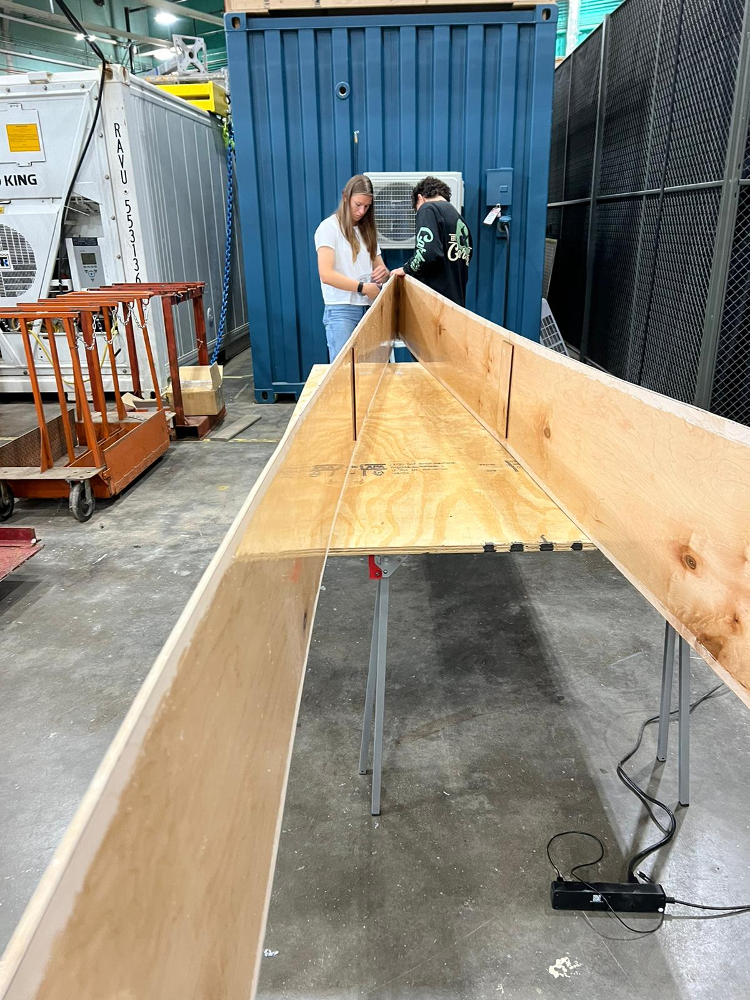

### Week 4: Shop Orientation and Cutting Boat Outline
<br><br>
Traced our boat outlines from last week onto the plywood, and then used tools to cut out the plywood in the shape of the outlines. Afterwards, we brought the pieces of the wood together to create the bigger boat shapes and pieces. Some of us came in later to coat the boat in epoxy.